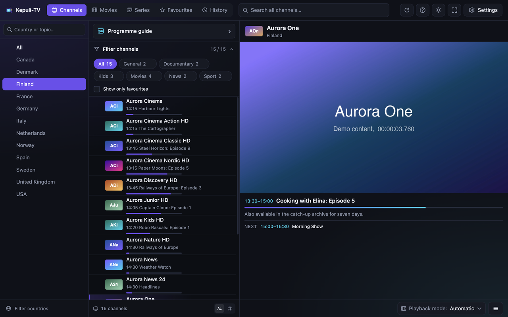
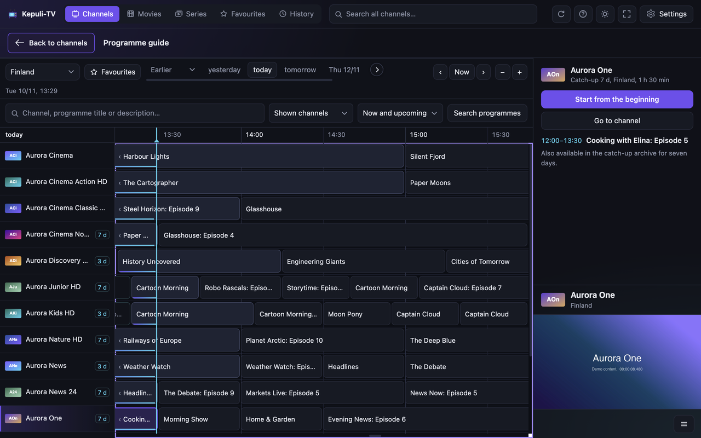
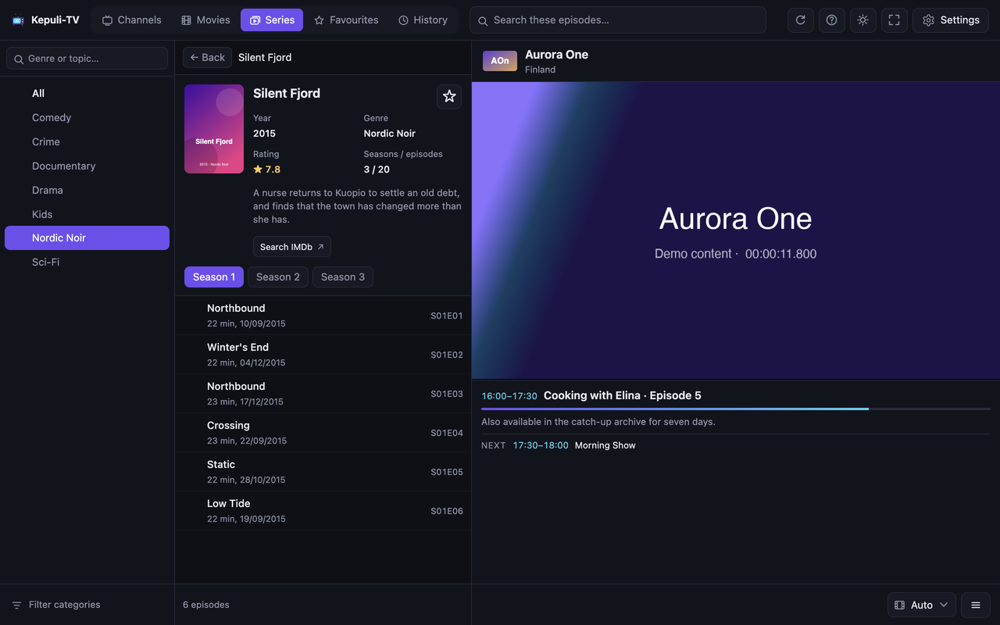
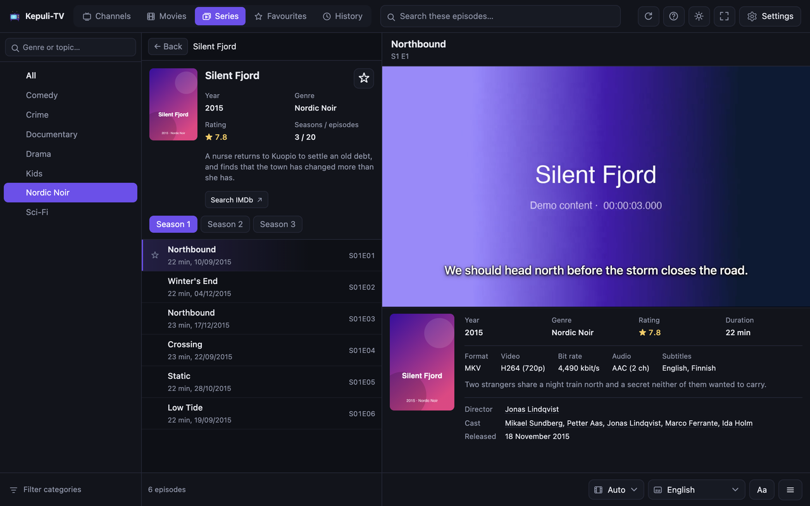
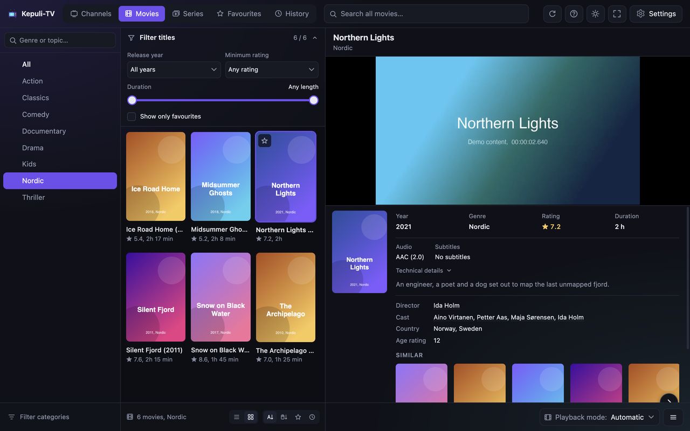

Kepuli-TV – IPTV Player
Your own IPTV subscription, played in a browser tab: live TV with a programme guide, films and series, recording, in thirty languages. Free and open source.

▶ Watch the four-minute tourOpens on YouTube. Everything shown is fictional demo content.









A free, open-source IPTV player for Chrome and Firefox. Bring your own Xtream Codes account, M3U playlist or Stalker portal, and watch live TV, films and series in a browser tab. There is no app to install and no account with us, and your details stay in your browser.
| Browser | Install |
|---|---|
| Google Chrome 116 or newer | Chrome Web Store |
| Mozilla Firefox 130 or newer, and Orion on the iPhone | Firefox Add-ons |
Watch the four-minute tour on YouTube
Key features
- Live TV by country and topic, with what is on now, an interactive programme guide, catch-up and programme search
- Films and series as covers or a list, filtered by category and length, with the plot, rating, director, cast, titles alike and the file's format, and whether it plays in your browser; films marked watched, playback resumes where you stopped, and the next episode follows
- A start page with what you left halfway, what is on your channels now and soon, and the channels you watched lately
- MKV in the browser, seeking included, with subtitles in the size and style you choose and every audio track, AC-3, E-AC-3 and DTS too
- Recording of the channel you watch, or a programme planned from the guide, kept in the browser and saved as a file when you like
- Favourites everywhere, personal channel lists, and only the countries and categories you choose
- Several accounts side by side, and sync between computers through the browser's own sync, off until you turn it on
- Chromecast, picture-in-picture, and a hand-off to VLC or another player
- Made for the keyboard, in thirty languages, dark or light
Getting started
- Install Kepuli-TV from your browser's store and click its toolbar icon.
- Paste your provider's M3U address (or choose the playlist as a file), or enter the Xtream Codes server, user name and password, or a Stalker portal with the MAC address registered to your subscription.
- Pick a country and a channel. Press
?for the keyboard shortcuts.
Kepuli-TV contains no channels or content: you need your own subscription.
User guide
The user guide covers everything in detail: accounts, Stalker portals, recording, sync, the programme guide, the keys, the settings and what to do when something goes wrong.
Found a bug? Open a GitHub issue with your browser and the steps that lead to it. Leave out your credentials and any stream address that contains them.
Intended use
Kepuli-TV is only a player. It comes with no channels, playlists or media, does not host or link to any, and plays nothing until you add an account or a playlist from your own provider. Use it only for content you have the right to watch, such as your own subscription, and keep recordings for your own use. The author does not sell, provide or recommend IPTV subscriptions or providers, and GitHub issues asking for them are closed.
Your credentials are kept in the browser's own storage on your computer, and reach other computers only if you turn on sync and include passwords. See the privacy policy and the terms of use.
Development
There is no build step: the files are what the browser runs. To try a change:
- Chrome:
chrome://extensions→ Developer mode → Load unpacked → this folder, ornode dev/dev.mjsfor a profile of its own that reloads on every change - Firefox:
node firefox/build.mjs, thenabout:debugging→ This Firefox → Load Temporary Add-on →firefox/dist/manifest.json - Tests:
node dev/unitcheck.mjs, andnode dev/playcheck.mjsagainst the mock server indev/mock/(runsh dev/mock/media.shonce first); every check is listed indev/AGENTS.md
More in Developing Kepuli-TV
(structure, languages, screenshots, publishing) and
How Kepuli-TV works
(data, categories, playback routes, connection modes), with FIREFOX.md and
CHROMECAST.md beside them. Coding agents start from AGENTS.md, and each
directory has its own.
Licence
The project's own code is MIT licensed, see LICENSE. The vendor/
directory holds third-party code on its own terms: hls.js and mpegts.js
under Apache-2.0, and vendor/ffaudio/ built from FFmpeg under LGPL-2.1+. The
build commands are in dev/wasm/build.sh, so that the relinking required by
LGPL 2.1 §6 is possible.
Copyright (c) 2026 Samuli Vainio